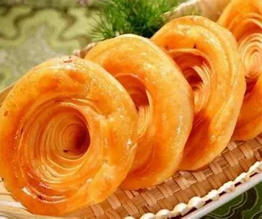
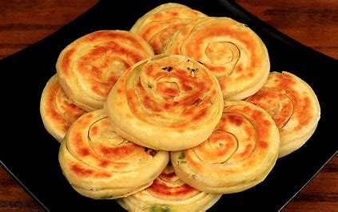
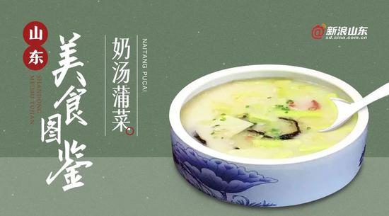

舌尖上的济南——老济南特色美食
发布时间: 2023-04-07 4859 次浏览
-
济南特色美食中的特色小吃都有自己的历史故事，美味可口，包括：甜沫，油旋儿，锅贴和糖酥煎饼，所有这些小吃都让人流口水。 驰名海内外的特色物产章丘大葱，号称“葱王”，一棵能长到二米多；东阿名品阿胶，既能治病，又能强身，是高级营养滋补品；盛产于平阴县的玫瑰，栽培历史悠久，花大瓣厚色艳，香味浓郁，驰名中外。
盘丝饼:
也称为青油盘丝饼。通常使用花生油来烙饼，这里的“青油”指的并不是青色的油，而是相对于动物油来说的。“盘丝”是指此饼的造型特色，它由传统的胶东抻面制成。把面抻至极细，细如发丝，再盘成圆饼型，故名“盘丝饼”。此饼外焦里嫩、金丝均匀、脆酥香甜，是宴席上的上品点心，也是济南特色美食。
油旋儿：
这是一道在济南已经有上百多年历史的名小吃，往前追溯的话，最早经营油旋儿可能是清朝道光年间的凤集楼。到了光绪二十年开业的文升园饭庄，以经营众多地方小吃而闻名泉城。此家饭庄生产的油旋儿用章丘大葱和面，熟后葱香味浓郁，层次分明，外酥内嫩，久为食者称道，后为饮食同业人广为仿制。40年代开业的聚丰德饭店接过了这一名小吃，并加以改进，增添了马蹄油旋儿、蛋黄油旋儿等。老济南人吃油旋儿是颇讲究的，大多是趁热吃，或配米粉，或配馄饨，这让济南特色美食别有一番滋味。
奶汤蒲菜:
奶汤蒲菜相信大部分济南人都不陌生，也是平时吃饭也经常会吃的一道特色菜。它是以济南大明湖出产的一种质地鲜嫩、色泽洁白、味道清鲜的蒲菜为主料，配有苔菜花、冬菇，加奶汤烹制而成。奶汤味道醇厚，洁白，蒲菜脆嫩，在济南特色美食中历来被人们誉为济南第一汤菜。
把子肉是鲁菜的经典名菜之一，为泉城济南的名吃，属于鲁菜系。把子肉采用上好猪五花肉烹制，有肥而不腻的特殊口感，与用饴糖酱色上好肉汤慢火烹制的菜品相组合，刚好用来下饭。而一口饭一口肉的搭配就恰好把米香肉香统统带出来。把子肉多为午餐食用，但作为晚餐也非常适宜。

黄河文化旅游宣传平台
联系电话: 17753010787
版权所有：山东大学技术团队
技术支持：山东大学技术团队